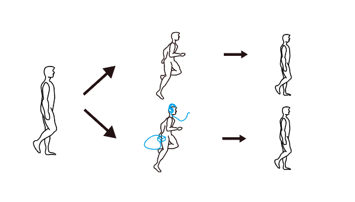
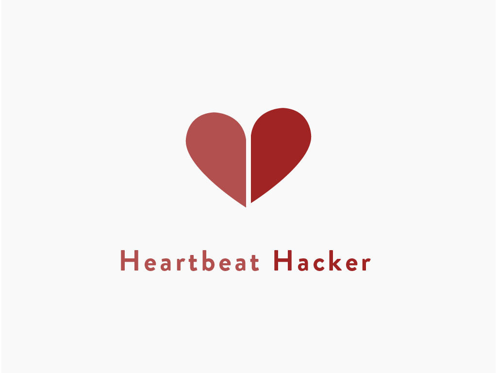
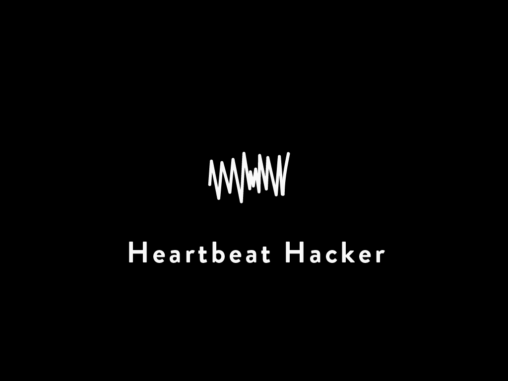
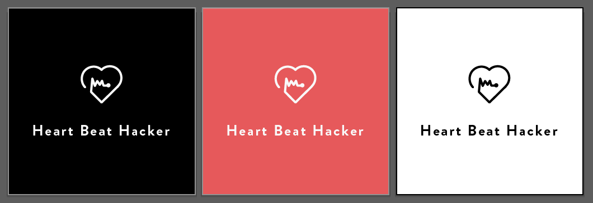
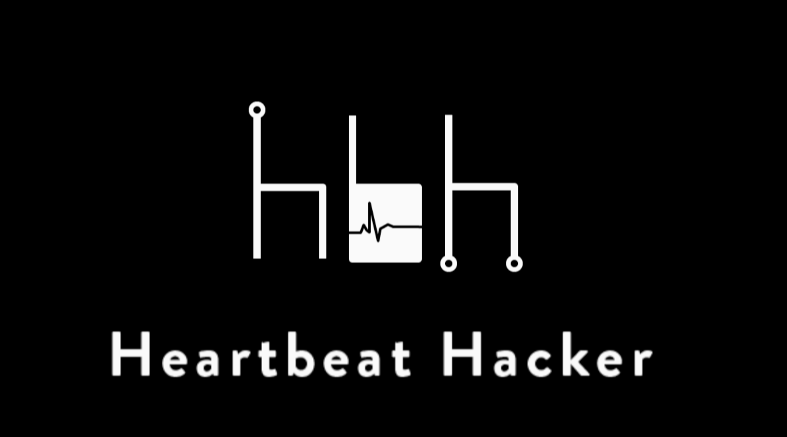
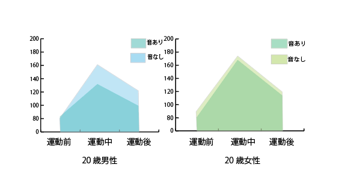

プロダクト名 : Heartbeat Hacker
動画リンク : https://vimeo.com/207013220
制作期間 : 2ヶ月
制作構成人数 : チーム制作 (2名+教員指導1名)
*作品は研究段階です。
運動者の心拍を記録し、その心拍よりも遅いリズムの音をヘッドフォンを通じて運動者に聞かせます。その結果、その偽のリズムに影響を受け、運動者の心拍が上がりきらず留まったり、上昇スピードが遅くなるのではないかという仮説のもと研究をしています。
疑似体験やSRといった過去の研究論文などから着想を得ました。疑似的な体験を与えることで、人としての機能の拡張を実現できないかというコンセプトから始まったHCI(Human Computer Interaction)の研究です。

プロダクトイメージ
ロゴデザイン、ハードウェアデザイン、映像制作を担当しました。
ロゴデザインにおいては、いくつかのプロトタイプを制作しました。

ロゴプロトタイプ1

ロゴプロトタイプ2

ロゴプロトタイプ3

ロゴプロトタイプ4
ハードウェアにおいては、心拍センサーを用いて、ユーザーの心拍数を取得し、Arduinoから、PCのソフトウェアに送るプロトタイプを製作しました。
 実験イメージ
実験イメージ
『プロトタイピング』 → Arduino, Xbee, ZigBee NetWork,Processing
『モデリング』 → Rhinoceros
『ロゴ、ポスター制作』 → Adobe Illustrator
『映像制作』 → Adobe Premire,Adobe After Effect
20才の男女に実験を行なったところ、本システムが運動者に影響を及ぼす可能性を示すデータが得られました。今後は、複数センサーを用いた、生体情報の取得や、心肺機能の異なる集団に対する実験を行う予定。  2016年11月時点
2016年11月に開催された、SFC-OpenResearchForamにて展示を行ないました。
2017年夏8月5日、6日に幕張で開催される Maker Faire Tokyoにて展示予定です。
*作品は研究段階です。
 Maker Faire Tokyo 2017
Maker Faire Tokyo 2017